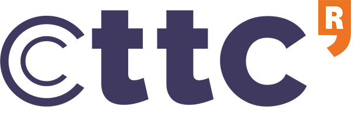
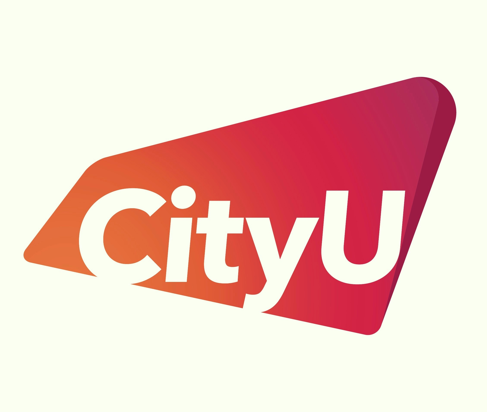

Mar 2025 - Present
Scientific Researcher - R2
CTTC
Research on communication with feedback. ETSI Pre-standardization activity.
(2026, 2025) Team Coordinator at Mobile World Congress.
AI researcher currently working at the intersection of wireless communication
and machine learning.
Interested in AI strategy, governance, risk analysis and mitigation.
Scientific Researcher — R2 at CTTC, Barcelona.
AI-Driven Multi-Antenna Designs for Next Generations of Wireless Communication Systems
PhD completed at Centre Tecnològic de Telecomunicacions de Catalunya (CTTC) and Universitat Politècnica de Catalunya (UPC) in September 2025.
Shortlisted among the final four nominees for the ETSI Young Researcher Award 2026 .
Selected research output over the years.
The PhD research period focused on applied AI with emphasis on scalable and explainable
machine learning solutions.
Delegate of CTTC at Industry Specification Group MAT: To build wider consensus for 3GPP-based 6G systems working in consortium consisting of BBC, Eurecom, Imperial College London.
Publications: IEEE CSCN 2026 | Group Report 2025
AI Strategy: Autoencoders, Transformers, and Reinforcement Learning agents.
Related fields: Time-series analysis and forecasting, LiDAR sensor communication, and multi-agent coordination.
AI Strategy: Viewing the wireless channel as a graph and applying self-supervised training.
Outcomes:
Publications: IEEE Access 2025 | ICMLCN 2025 (Barcelona, Spain)
Related fields: Explainable AI and heterogeneous graph neural networks.
AI Strategy: Processing pilots using 1D-CNN and GNN architectures instead of MLPs.
Outcomes:
Publications: IEEE Transactions MLCN 2024 | CCNC 2025 (Las Vegas, USA)
Related fields: Time-series forecasting, inference optimization, and pruning techniques.
Technology: Application of Blockchain Technology.
Publications: Report and Policy Paper (UNO Vienna, Austria)
Related fields: Interdisciplinary research and the need for digital literacy.

Mar 2025 - Present
CTTC
Research on communication with feedback. ETSI Pre-standardization activity.
(2026, 2025) Team Coordinator at Mobile World Congress.
Sep 2020 - Feb 2025
CTTC
Research on AI applied to telecommunications for 5G/6G. Participation in European and National (Spain) projects.
(2024) Local Committee member for AI/ML Training School (INTERACT).
Jun 2020 - Aug 2020
Inflight VR, Barcelona
Internship covering TCP/IP and Network Management, VR Headset Data Analytics [Python].
Mar 2018 - Aug 2018
Deloitte Touche Tohmatsu, Hong Kong
Internship covering Risk Assessment Services, Cyber Security Compliance Projects related to Hong Kong Monetary Authority Policies.
2021 - 2025
CTTC & UPC Barcelona
Supervised by Dr. Carles Antòn-Haro (CTTC) and Dr. Xavier Mestre (CTTC).
2019 - 2020
UPC Barcelona
Thesis under the supervision of Dr. Jesus Alcober.

2014 - 2018
City University of Hong Kong
(2018) Thesis under the supervision of Dr. Nelson Chan.
(2016) Formal exchange program at The University of British Columbia - Vancouver, Canada.